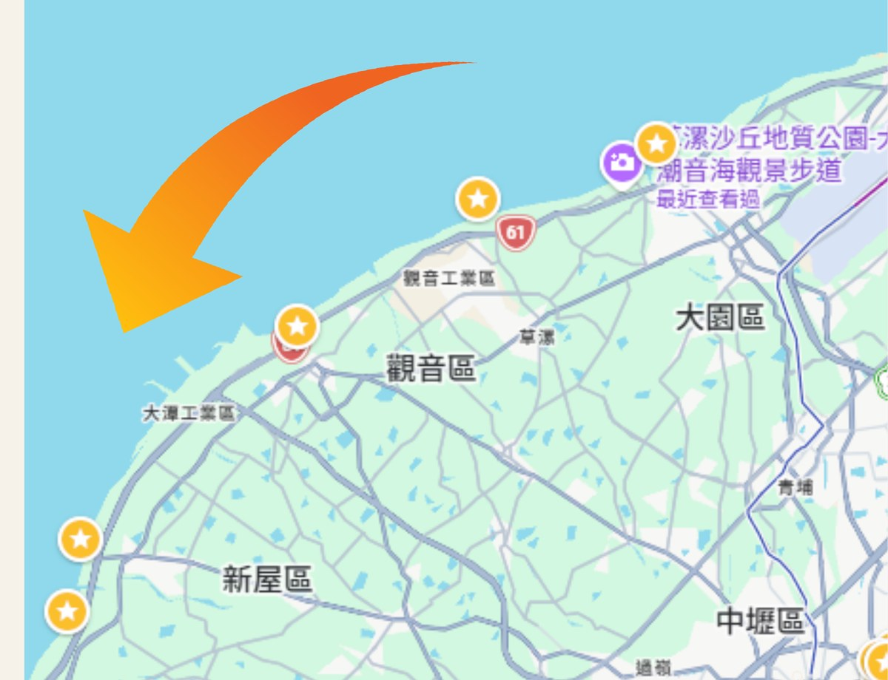

Travel Mood
一條不用遠行，也能換一種空氣的路線
桃園海線的迷人之處，不只在單一景點，而是在沿途不斷變換的風景。濕地、沙丘、燈塔、漁港與綠廊彼此距離不遠， 移動之間也能一直感覺到海風。
早晨先靠近海
從許厝港濕地開始，讓開闊天空、候鳥與海岸線把一天慢慢打開。
中段留給地方感
白沙岬燈塔與永安漁港把歷史、漁市與海味放進路線，讓風景變得更有層次。
預算留給好好吃飯
景點多數免門票，花費主要落在交通、午餐與甜點，適合朋友小旅行。
Route Preview
一天的節奏，從海邊慢慢轉進市區
-
上午看海與地景
先用濕地與沙丘打開視野，再用燈塔和漁港感受桃園海線的地方故事。 -
中午坐下來吃海味
把午餐安排在漁港周邊，讓「看海」自然延伸成「吃在地」。 -
下午把速度放慢
新屋綠色走廊適合騎車吹風，接著回到中壢用冰品與牛肉麵收尾。

Featured Stops
瀏覽景點
先收藏幾個最能代表這趟旅行的地方

許厝港濕地
用濕地、天空與水鳥作為開場，讓旅行一開始就離日常遠一點。

觀音草漯沙丘
沙丘、海風與風車同框，是桃園海岸線最有辨識度的畫面之一。

永安漁港
漁市、海景步道與午餐選擇集中在一起，是中段最適合停下來的地方。